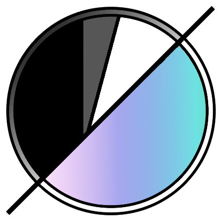

EFAS Negative Inversion Software
Bring your film negatives to life.
A free, open-source film-negative converter for your desktop.
From a single scan to a whole roll: invert, grade, repair, organise and export, all locally and non-destructively.
Download for Windows → · Run from source →
Features · Presets · Plugins · Get started · Your data · Privacy · Docs
Notice: this software is heavily under development and may have issues and bugs. Back up your photos and use it at your own risk.
About this README (AI-written documentation)
The changelogs, release notes, README and guides in this project are written by AI (Claude, by Anthropic), not by hand. Ethan, the author, would rather spend their time on the software than on writing changelogs, and an AI keeps them more consistent and better organised. MINOR Code correction. Ethan decides what gets built and how it should work. If something in the text is wrong or unclear, please open an issue.
Built in Python with PyQt6. Created by Ethan.
Open a negative (RAW, TIFF, PNG or JPEG), invert it, balance the colour and tone, retouch dust and scratches, then export. Every edit is stored per photo in a local database and nothing is ever written over your originals.
Features
Negative inversion and tone
- Negative inversion and metering: film-base sampling, per-channel balance, colour-negative and black-and-white modes, eyedropper picking, White / Black point droppers
- Scanning light (Negative > Color trim): a starting colour trim from the colour temperature of the backlight the negative was photographed on
- Exposure, tone curve, contrast, shadows/highlights, local contrast, sharpening, denoise, flat-field correction (the flat-field map ignores specks of dust on the light-source reference)
- Print Response (WB Correction tab): Snap, Toe and Shoulder, with a width for each roll-off, shape the picture's response curve the way a print's characteristic curve is shaped, drawn as a small graph
- Module on/off lights: a light beside each editing module's name (a square in the Classic theme, a circle with a grey border in the others); green is on, red is off. Click it to make the picture without that module while keeping its settings
- Histogram: stays in view while the sidebar scrolls; Log scale and Split (red, green and blue in separate strips) buttons; the Color graph is greyed out for a black-and-white negative
- A short written read-out under the histogram: exposure, contrast, range, clipping, colour, saturation and the channel averages, then the scan quality; hover a row for the full detail
Retouching, geometry and finishing
- Dust and scratch removal: manual spot and curved-scratch tools, a clone tool and AI dust detection. If automatic detection gets one wrong, show the detections, click that one with Delete Repair and only it is left alone (Reset Deleted brings them back)
- Error marking (Negative tab, and View > Error Marks or Shift+E): drag boxes round faults in a scan, each kind with its own colour and tag: scratches red, watermarks yellow, transport lines dark navy, Newton rings, light leaks, dust and hairs, fingerprints, unknown. Right-click a mark to change or remove it. Marks are notes kept with the photo, follow the crop and rotation, and are never part of an export
- Geometry: crop with guides, straighten tool, automatic crop by border gradient, Four-Corner Straighten (click the four corners of the photo and the Angle and Keystone are set to make them a true rectangle, then cropped, in one undoable step), keystone correction with an automatic suggestion from straight lines
- Crop Roll can make every crop the same size, each centred where its own border was found
- Finishing: vignette and borders
- Watermarks: a 3D film canister, camera and lens text (with or without the canister), styled text in any installed font or font file, and your own SVG or PNG logo. Drag any of them on the picture to move or resize them
Library and workflow
- Library: a Workbench grid with search by camera, lens, film, ISO, date, roll, rating and flag; stars, flags, tags, snapshots, history; sort by name, date or number of photos
- Tags nest (
People/Family; searching People finds everything inside it), with a drop-down of every tag you have made, a quick tag bar (T), and a Tagging panel like darktable's with Lightroom keyword import and export - Find (Ctrl+K) reaches any control, menu action, preset, module preset or smart collection
- Virtual copies (several edits of one scan), smart collections, a duplicate finder, and undo for whole-roll actions
- Proofing tools: test strip, ring-around, split view, contact sheets
- Color Mixer and a better colour model: Vibrance that spares skin tones and already-vivid colours, and Hue / Saturation / Lightness for eight colour ranges, all worked in OKLCH so a colour moves without dragging its lightness or hue along (see the colour page); Lab Look also has a scanner colour response (Frontier, Noritsu, Pakon, Crystal Archive)
- Lab Look: Fade, Glow, and warm / cool and green / magenta balance for the shadows, midtones and highlights separately, the character a lab's scanner adds; the built-in Lab Scanners and Film Stocks presets use it
- Modern conversion (default; Original is one dropdown away): a conversion that treats the film, the scene and the paper separately: dye crosstalk is taken out, part of the film's toe and shoulder is put back, and the picture prints through a paper curve with a toe and a shoulder, so highlights roll off instead of clipping. It can be measured against a film simulator (see the design page)
- Steadier colour on a roll: Find Film Base for the Whole Roll reads the clear border of several frames into one film base; an optional linear camera RGB RAW decode inverts the negative before the camera's colour matrix is applied (see the scanning guide)
- Export: JPEG, PNG and TIFF (16-bit supported), size and quality options, metadata and XMP, batch export, output sharpening, export safety checks
- Film Colour Reference (Extra menu, and the Negative tab): search a film stock and see photos shot on it, from lomography.com, in a clean gallery to judge a conversion's colour against (see Privacy)
- Command line:
python -m photoeditor convert|presets|info|check-roll|merge, using the editor's own data folder
Scientific measurement and film science (Advanced mode)
- Scientific measurement: linear RAW values, optical density, per-channel film base (Dmin) and Dmax, a density histogram, an H&D curve viewer for curve data you supply, and the calibration behind every number. See the design document
- Film characterization (optional): calibrate your camera against a step tablet, fit a film's H&D curves from a strip exposed through one, save film profiles, and optionally convert with the measured curves. Never builds a curve from an ordinary photograph. See the guide and the design document
- Scanning quality and merging: a plain scan-quality verdict, automatic film-border finding (confirmed before use), bracketed-exposure and one-light-per-colour scan merging into a measured 16-bit linear scan, roll consistency checks, Check Flat Field, Even Out Roll, and an optional colour-target accuracy fit. See the scanning guide
- Flat exports: flat, linear-light and density 16-bit TIFF outputs for grading elsewhere, with an optional conversion record
- Shareable film profiles:
.efasprofilebundles that are checksummed, sanity-checked and imported as received, never as your own measurement. Film profiles can be sorted into folders (Kodak/Portra 400/Roll 3)
Look and feel
- Themes: Modern (the default), Default, Midnight, Graphite, Darkroom and High contrast, with accent colours and text size, plus your own themes as CSS files (Settings > Themes; see docs/themes.md)
- Dividers between the sections inside the modules, and modules that close when you switch tabs (a setting)
- Keyboard shortcuts for the common actions, all rebindable in Settings > Keybinds
Safety and updates
- Data safety: automatic backups, startup health check with restore, and full data export/import (Settings > Data & backup)
- Report a problem: a redacted report you can read, save and attach to a GitHub issue; nothing is sent automatically
- Updates: Info > Version, with a startup notice when a new version is out (see Updates)
Presets
Preset folders, built-in presets and hover preview
- Folders: a name with slashes (
B&W/Number 1) is a preset inside a folder, like the nesting of tags. The Presets list and the Film Profiles list show them as a tree; right-click a folder to save into it, rename it or delete it. - My Presets and Built-in Presets: two buttons switch the list between the presets you made and the ones that come with EFAS (read-only; Copy to My Presets makes an editable copy).
- Built-in sets: Lab Scanners (Frontier 100, Crystal 100, Pakon, Noritsu) and Film Stocks (Cinestill, Fuji Superia, Kodak Gold, Portra, Portra Airy). They are EFAS's own approximations of the tone, saturation and warmth of those looks, not measurements.
- Hover preview: rest the mouse on a preset to see it on the picture before applying it (Settings > General turns it off). Clear takes the look off the photo again.
See docs/presets.md for how the built-in presets were made and how to add your own.
Plugins
Extend EFAS with Python or Lua
EFAS can be extended with plugins written in Python or Lua (Lua 5.4 is built in; nothing to install). A plugin can add menu items and modules (buttons, sliders, check boxes, drop-downs, text boxes) to the editor, read the open photo and change its edit the way the sliders do, measure the picture, apply presets, add tags, and react to events.
- Every plugin starts switched off; turn each on in Settings > Plugins, which also opens the plugins folder, installs five examples and makes an empty plugin to start from.
- View > Plugin Output opens a window with everything the plugins print and every error found in them.
- Lua plugins run in a sandbox (no files, no programs, no internet, time-limited). Python plugins run with the same access as EFAS itself, so only switch on Python plugins you trust.
Documentation for plugin authors (start here: docs/plugins):
| Page | What is in it |
|---|---|
| Getting started | Your first plugin in ten minutes, in Lua and Python |
| The manifest | plugin.json and where plugins live |
| API reference | Every function, for both languages |
| UI and modules | Menu items, modules, buttons, sliders and the rest |
| Events | Reacting to a photo opening, the edit changing and more |
| Lua / Python | What each language can use and how it behaves |
| Plugin Output and debugging | Finding your plugin's output and errors |
| Security | What a plugin can and cannot do |
| Examples | Five complete plugins to read and copy |
| How it is built | For people changing EFAS itself |
Get started
Download (Windows)
Grab the single-file .exe from the Releases page. There is nothing to install, and it updates itself from Info > Version.
Run from source (Windows, Linux, macOS)
git clone https://github.com/EthanChas/EFAS-Negative-Inversion-Software.git
cd EFAS-Negative-Inversion-Software
python -m pip install -e .(That installs every dependency, including send2trash on Linux and macOS, which moves deleted photos to the Trash. To install them by hand instead: python -m pip install PyQt6 Pillow rawpy numpy opencv-python-headless onnxruntime piexif tifffile lupa send2trash.)
On Linux, Qt needs a few system libraries; on Debian or Ubuntu: sudo apt install libegl1 libxkbcommon-x11-0 libxcb-cursor0 libxcb-icccm4 libxcb-keysyms1 libxcb-shape0.
On Windows, double-click start.bat (or run start.bat console to keep a console open for errors). On Linux and macOS run ./start.sh. From any shell:
PYTHONPATH=src python -m photoeditorOn Windows PowerShell set the path first: $env:PYTHONPATH = "src".
Supported systems
| OS | Status |
|---|---|
| Windows 10 / 11 | Supported. The released .exe is Windows only |
| Linux | Runs from source. The automated tests run on it, but the author has not yet used it on a real Linux machine |
| macOS | Runs from source. The automated tests run on it, but the author has not yet used it on a real Mac |
The tests run on Windows, Linux and macOS through GitHub Actions (tests.yml), so a problem on another system shows up there. Please report anything that looks wrong on Linux or macOS. Known differences: the self-updating .exe is Windows only (elsewhere Info > Version opens the release page); fonts and default text sizes follow the system; on a Mac the Delete key in the Workbench is the key labelled delete (Backspace); deleting photos uses the system Trash through the send2trash package.
Requirements
- Python 3.10 or newer (developed and tested on 3.13)
- Dependencies: PyQt6 >= 6.6, Pillow >= 10, rawpy >= 0.19, numpy >= 1.26, opencv-python-headless >= 4.8, onnxruntime >= 1.17, piexif >= 1.1, tifffile >= 2023.1, lupa >= 2.0 (the Lua interpreter for plugins)
Build the app
python tools/build_app.py builds for the system it runs on (a .exe on Windows, a .app on macOS, one executable on Linux), after python -m pip install pyinstaller. PyInstaller cannot build for another system. The Build apps workflow (Actions tab, run by hand) builds all three. The Windows command it wraps:
python -m pip install pyinstaller
python -m PyInstaller --noconfirm --onefile --windowed --name "EFAS Negative Inversion Software" --paths src --add-data "src/photoeditor/assets;photoeditor/assets" --hidden-import onnxruntime --hidden-import lupa.lua54 --collect-all lupa --exclude-module torch --exclude-module transformers --exclude-module tensorflow --exclude-module scipy --exclude-module numba --exclude-module matplotlib --exclude-module pandas --exclude-module tkinter --exclude-module sklearn --exclude-module sympy --exclude-module onnx run_app.pyThe result is dist/EFAS Negative Inversion Software.exe. The excluded modules only keep the build small and fast.
Run the tests
python -m pip install pytest
python -m pytestWhere your data lives
The EFAS data folder
Everything EFAS keeps for itself lives in one folder, .EFAS, in your home folder:
| System | Default location |
|---|---|
| Windows | C:\Users\<you>\.EFAS |
| macOS | /Users/<you>/.EFAS |
| Linux | /home/<you>/.EFAS |
Set the PHOTOEDITOR_DATA_DIR environment variable to use a different folder. Settings > Data & backup shows the folder, backs it up and exports or imports everything.
Upgrading from an older version: versions before 0.6 kept their files in ~/.photoeditor under vaguer names. The first start of a newer version moves everything across by itself into .EFAS and removes the old folder, so there is nothing to do.
What is inside:
In .EFAS |
What it holds |
|---|---|
photo-edits.db |
Every photo's edits, history, ratings, flags, roll cards, snapshots, tags and error marks |
workbench-index.db |
The Workbench's index of your library, so search and sorting are quick |
app-settings.json |
Settings > Preferences: theme, keybinds, switches, which plugins are on |
window-and-panel-layout.ini, last-session.json, recent-folders.json |
Where the window, panels and last folder were |
look-presets.json, module-presets.json |
Your presets (My Presets and each module's presets) |
camera-and-lens-presets.json, camera-and-lens-lists/, remembered-metadata.json |
Camera and lens names and the details EFAS remembers for the Roll Card |
film-profiles/, camera-setups/ |
Film profiles and camera set-ups from Advanced mode |
database-backups/ |
The daily database backups (photo-edits-YYYY-MM-DD.db) |
plugins/ |
Your plugins, one folder each (Settings > Plugins > Open plugins folder) |
plugin-data/ |
What each plugin saves: its settings and files |
themes/ |
Theme files you imported |
thumbnail-cache/, ai-dust-cache/, font-list-cache.json, film-reference-films.json |
Caches; safe to delete, they are rebuilt (Settings > Storage clears them) |
logs/ |
The program's log, used by Report a Problem |
Next to your photos, EFAS also writes a small .xmp sidecar file for each edited photo, so an edit travels with the picture. Your original photo files are never changed.
Privacy
What goes online (very little)
The editor is offline only. No data is sent out: no analytics, no telemetry, no accounts, and your photos and edits never leave your computer.
The one thing it does online is ask the GitHub releases page for the latest version number, so it can tell you when an update exists (and download it if you choose to update). That is a plain web request, so GitHub sees your IP address the way any website does, and nothing else. You can turn the check off under Settings > General, and you can run the app with no internet connection at all.
The other online feature is the Film Colour Reference. It does nothing until you open it from the Extra menu or the Negative tab and agree to it once (Settings > General turns it off again). While its window is open it reads lomography.com's film list and the sample photos of the film you pick, only from lomography.com's own film pages (never its search, browse or API pages, which its robots.txt asks programs to avoid), with a User-Agent that says what it is. What you type in its search box stays on this computer (the film list is searched here), no information about you or your photos is sent, and lomography.com sees your IP address like any website does. The photos are shown, not saved or edited; they are by Lomography community members, so each shows who took it and links to its page. Only the film list (names and page addresses) is kept, for two weeks, in the data folder.
Plugins are the one place EFAS cannot promise this for you: a Python plugin can do anything Python can, including going online. Lua plugins cannot. See plugin security.
Your privacy is a right, and it will be respected.
Updates
How updating works
- Info > Version shows the installed version and checks for a newer one. Info > Check for Updates... does the same check directly.
- On start, if a newer version is available, the app says so and asks whether you would like to update.
- Choosing Update downloads the new
.exefrom the GitHub release, checks its size and SHA-256 checksum against what GitHub lists, replaces the running program and restarts it. Downloads are only accepted over https from GitHub's own hosts. - Self-update works for the packaged Windows
.exe. When running from source, the update button opens the release page instead.
Documentation
All the guides
| Guide | What it covers |
|---|---|
| Plugins | Writing plugins in Python and Lua: API, UI, events, security, examples |
| Presets | Folders, My and Built-in presets, how the built-in ones were made |
| Themes | The built-in themes and writing your own as a CSS file |
| Scanning and export guide | Scan quality, merging scans, flat exports |
| Film characterization guide | Calibrating, fitting film curves, saving film profiles |
| Scientific inversion design | How the measured conversion works |
| Sensitometry design | Film profiles, camera set-ups and the curve-informed inversion |
Credits and inspiration
Projects that inspired EFAS
The interface and module layout are based on and inspired by darktable. The editing features draw on the programs below. Please try them; they are excellent.
| Project | What it inspired | Link |
|---|---|---|
| darktable | The darkroom layout, module panels with presets and reset buttons, focus peaking | darktable.org |
| Adobe Lightroom | Culling with flags and stars, presets, histogram and clipping views, contact sheets | adobe.com/products/photoshop-lightroom |
| CineStill CS Negative+ Convert Tools | The idea of a fast, accurate film-scan conversion workflow | cinestillfilm.com, PetaPixel write-up |
| NegPy | Negative inversion and metering approach, dust and scratch repair, local contrast (CLAHE), clone tool, the Snap / Toe / Shoulder response, the print-stage approach behind the Modern conversion, and the sixteen film crosstalk profiles it bundles (unchanged, GPL-3.0). Parts of this app are adapted from its code (GPL-3.0) | github.com/marcinz606/NegPy |
| Lucide | The panel and tool-rail icons, loaded from src/photoeditor/assets/icon as plain SVG files (ISC licence) |
lucide.dev |
| DarkSlide | Ideas for roll-wide same-size crops, previewing a profile on hover and scanning-light settings | github.com/kilianvivien/DarkSlide |
| FilmDefectNet | The small ONNX model behind AI dust detection | FilmDefectNet project |
Also built on PyQt6, Pillow, rawpy, NumPy, OpenCV, ONNX Runtime and Lupa (Lua).
How it was made
- Created in PyQt6 by Ethan.
- Changelogs, release notes and documentation are written by AI (Claude), because it is more effective and better organised than writing them by hand.
- UI design and interface are based on, and inspired by, darktable.
- Design, basic functionality and concepts by Ethan.
- Developed with the help of Claude (Anthropic) for code corrections, bug fixes and implementation work.
Symbols
Every icon and glyph
Every icon and button glyph the app draws is rendered to the symbols folder for easy reference. Regenerate them with python tools/export_symbols.py (set QT_QPA_PLATFORM=windows on Windows so fonts render correctly).
Licence
Copyright (C) 2026 Ethan.
This is free, open-source software, released under the GNU General Public License v3.0. You are free to use, edit and redistribute it, as long as redistributed versions (modified or not) stay open source under the same licence. The GPL is used because parts of the app are adapted from NegPy, which is GPL-3.0.
There is no warranty of any kind.